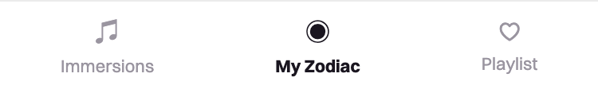
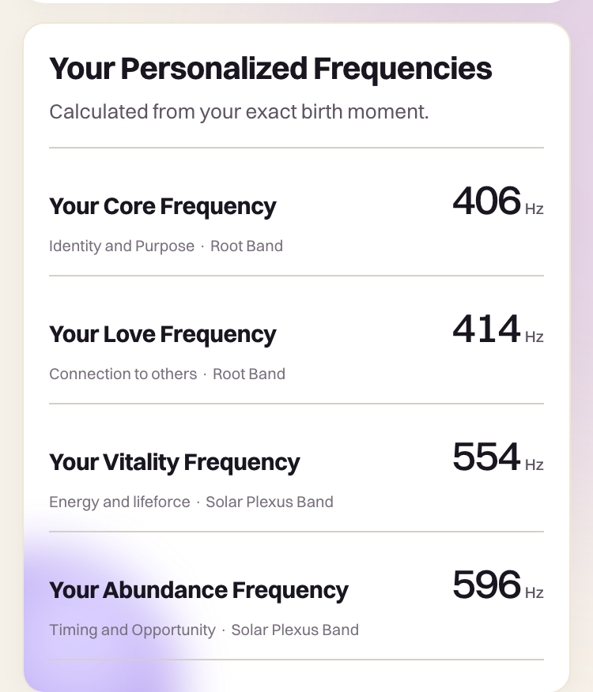
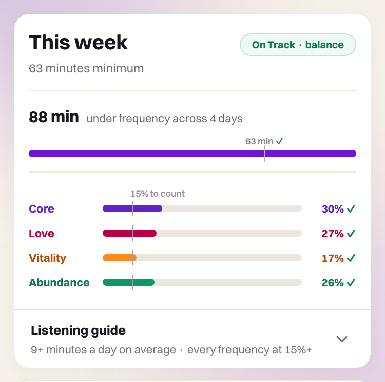
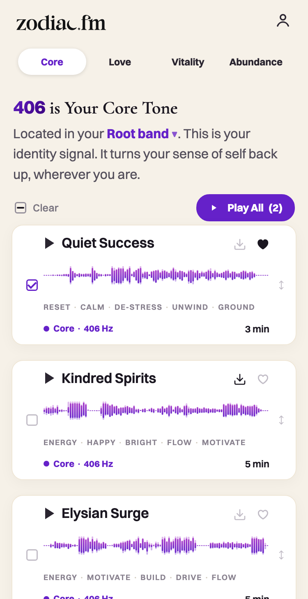

The new tab
Meet My Zodiac
A new tab in the middle of the app. Your four personalized frequencies, calculated from your exact birth moment — and everything behind your map.


The new Zodiac
This update is more than a new look. Your map, your bands, and your balance now live in one place — the new My Zodiac tab.
See what’s newYour music is untouched.
The new tab
A new tab in the middle of the app. Your four personalized frequencies, calculated from your exact birth moment — and everything behind your map.


Frequency Bands
Where each of your frequencies sits in your body, and how you most naturally process that part of life. Open each band and read yours — shown in full in the app, all four bands plus what every range means.

Weekly balance
Your minutes this week against your 63-minute weekly minimum, and how your listening spreads across your four frequencies — every frequency at 15% or more counts toward balance. Tap it any time for the full breakdown.

All-time listening
Every minute since your first: your lifetime total, balanced and unbalanced, and your lifetime frequency mix.

Immersions
Every song now draws its waveform from its own audio, in its frequency’s color — and the whole screen is calmer, clearer, and alive underneath.

Keep this page
You’ll always find this page in My Zodiac › FAQ › “See what’s new”.
And your music? Untouched. Every song and every playlist is exactly where you left it.